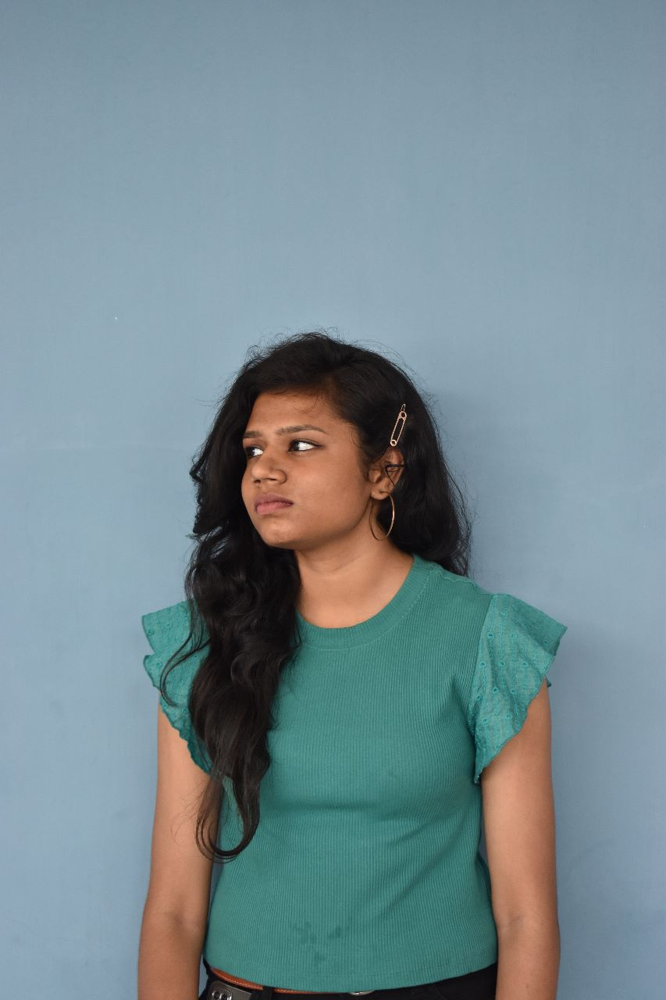

MY PORTFOLIO
Contact me :
It's
Sahana
I am currently learning Btech AI & DS
Intrested in AI, Machine learning and Data analytics

Close page
About
Education
Contact
ABOUT
Hello there!
I'm SAHANA M, and I'm thrilled to welcome you to my portfolio. I am a passionate and dedicated student pursuing a Bachelor's degree in Artificial Intelligence and Data Science. My journey in this dynamic field has been a captivating exploration of the endless possibilities that AI and data-driven insights offer to reshape the world around us. Throughout my academic voyage, I have been enamored by the intricate dance between algorithms and data, how they collaborate to unveil patterns, solve complex problems, and empower decision-making.
My commitment to continuous learning has led me to delve into various facets of AI and Data Science, from machine learning and deep learning to data analysis and visualization.
I have actively sought opportunities to apply my knowledge and skills to real-world scenarios. Whether it's developing a predictive model for stock market trends, extracting valuable insights from a messy dataset, or crafting a chatbot that simplifies user interactions, I thrive on the excitement of turning theory into tangible solutions. Collaboration is at the heart of innovation, and I cherish every chance to work with multidisciplinary teams. Through group projects, hackathons, and workshops, I have honed my ability to communicate ideas effectively, understand diverse perspectives, and contribute meaningfully to collective goals. While technical prowess is essential, I believe that ethical considerations are equally vital in the realm of AI.
I am deeply committed to ensuring that AI technologies are developed and deployed responsibly, adhering to principles of fairness, transparency, and accountability. As I continue on my academic journey, I eagerly anticipate the challenges and breakthroughs that lie ahead.
This portfolio is a reflection of my growth, my passion for AI and Data Science, and my unquenchable curiosity to explore the uncharted territories of this ever-evolving field.
Thank you you for visiting my portfolio. I invite you to explore the projects and experiences that have shaped my learning so far. If you'd like to connect, collaborate, or simply have a conversation about the fascinating world of AI and Data Science, please feel free to reach out. Let's innovate together!
Warm regards,
Sahana
EDUCATION
School : SINDHI MODEL SCHOOL, CHENNAI
College: KUMARAGURU COLLEGE OF TECHNOLOGY
10th mark percentage : 93 %
12th mark percentage: 92 %